The main purpose of a profiler is to record runtime data from various sources that is useful for solving common problems. The principal problem with this task is that a running JVM generates such data at an enormous rate. If the profiler would always record all types of data, it would create an unacceptable overhead or quickly use up all available memory. Also, you often want to record data around a particular use case and not see any unrelated activity.
This is why JProfiler offers fine-grained mechanisms for controlling the recording of information that you are actually interested in.
From a profiler's viewpoint, the least problematic form of data is scalar values, for example the number of active threads or the number of open JDBC connections. JProfiler can sample such values with a fixed macroscopic frequency - usually once per second - and show you the evolution over time. In JProfiler, views that show such data are called telemetries. Most telemetries are always recorded because the overhead of the measurement and the memory consumption are small. If data is recorded for a long time, older data points are consolidated so that memory consumption does not grow linearly with time.
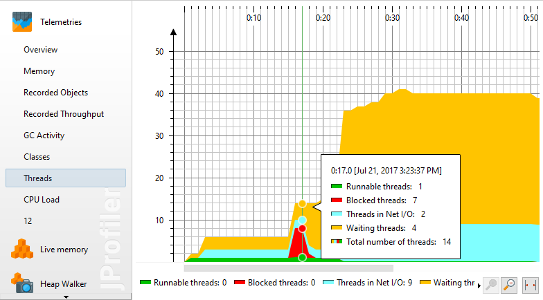
There are also parametrized telemetries, such as the number of instances for each class. The extra dimension makes a permanent chronological recording unsustainable. You can tell JProfiler to record telemetries of the instance counts of a number of selected classes, but not of each and every class.
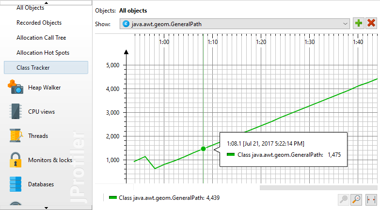
To continue the previous example, JProfiler is able to show you the instance counts of all classes, but without the chronological information. This is the "All objects" view and it shows each class as a row in a table. The frequency for updating the view is lower than once per second and may be adjusted automatically depending on how much overhead the measurement causes. Determining the instance counts of all classes is relatively expensive and takes longer the more objects are on the heap. JProfiler limits the update frequency of the "All objects" view so that the overhead of the measurement never exceeds 10% over time in extreme cases. You can freeze the views to temporarily stop recording. Also, if the view is not active, data will not be recorded and there is no associated overhead.
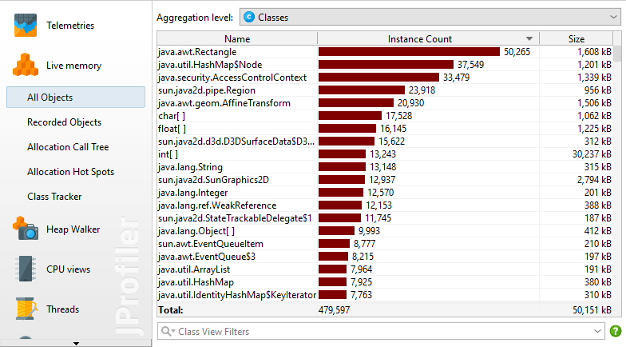
Some measurements capture enum-like values, such as the execution status a thread is currently in. This kind of measurement can be displayed as a colored time line and consumes a lot less memory than numerical telemetries. In the cases of thread statuses, the "Thread history" view shows the time lines for all threads in the JVM. Just like for the telemetries with numeric values, older values are consolidated and made more coarse-grained to reduce memory consumption.
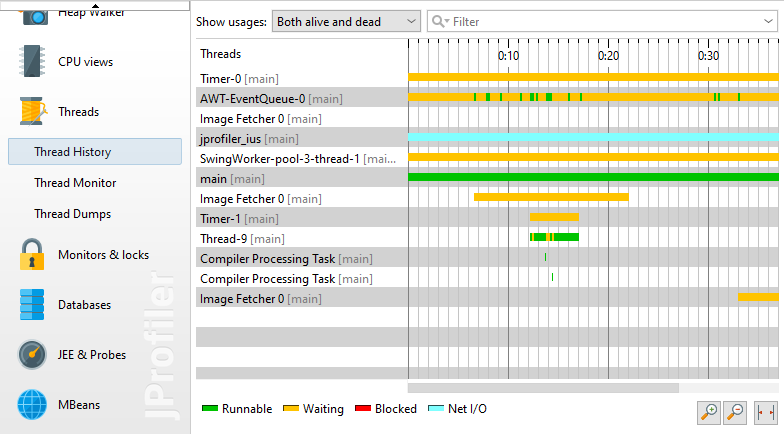
If you are interested in instance counts that have been allocated during a certain time interval, JProfiler has to track all allocations. Contrary to the "All objects" view where JProfiler can iterate over all objects in the heap to get information on demand, tracking single allocations requires that additional code has to be executed for each object allocation. That makes it a very expensive measurement that can significantly change the runtime characteristics of the profiled application, such as the performance hot spots, especially if you allocate many objects. This is why allocation recording has to be started and stopped explicitly.
Views that have an associated recording initially show an empty page with a recording button. The same recording button is also found in the toolbar.
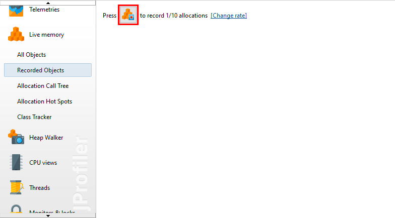
Allocation recording not only records the number of allocated instances, it also records the allocation stack traces. Keeping stack traces for each allocated recording in memory would create excessive overhead, so JProfiler cumulates recorded stack traces into a tree. This also has the advantage that you can interpret the data much more easily. However, the chronological aspect is lost and there is no way to extract certain time ranges from the data.
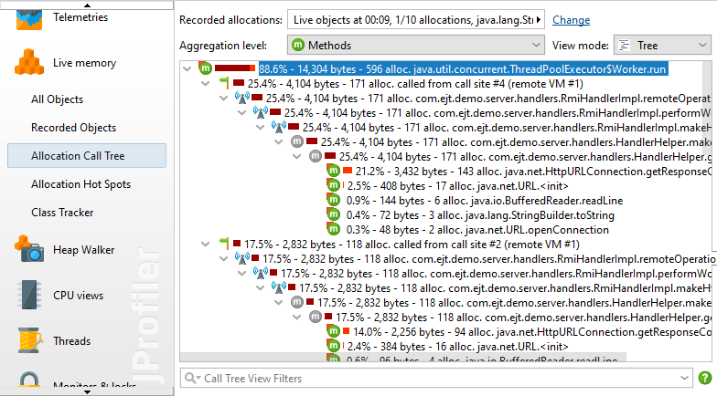
Allocation recording can only measure where objects are allocated and has no information on the references between objects. Any memory analysis that requires references, such as solving a memory leak, is done in the heap walker. The heap walker takes a snapshot of the entire heap and analyzes it. This is an invasive operation that pauses the JVM - potentially for a long time - and requires a large amount of memory.
A more lightweight operation is marking all object on the heap before you start a use case, so that you can find all newly allocated objects when you take a heap snapshot later on.
The JVM has a special trigger for dumping the entire heap to a file that is named after the old HPROF profiling agent. This is not related to the profiling interface and does not operate under its constraints. For this reason, the HPROF heap dump is faster and uses less resources. The downside is that you will not have a live connection to the JVM when viewing the heap snapshot in the heap walker and that some features are not available.
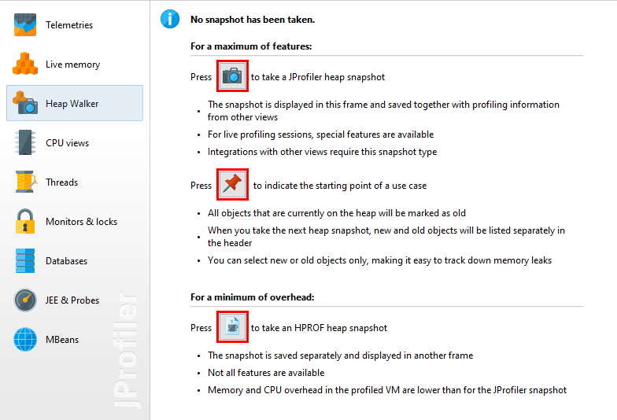
Measuring how long method calls take is an optional recording, just like allocation recording. Method calls are cumulated into a tree and there are various views that show the recorded data from different perspectives, such as a call graph. The recording for this type of data is called "CPU recording" in JProfiler.
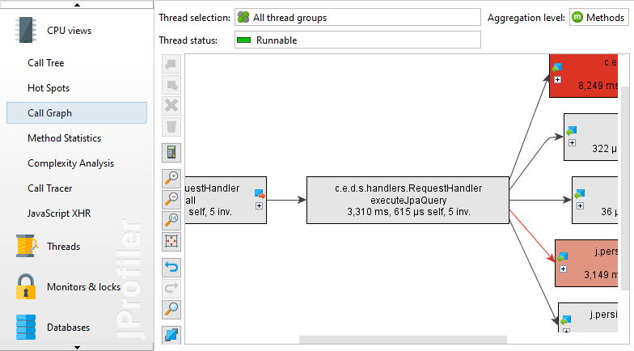
Under particular circumstances it may be useful to see the chronological sequence of method calls, especially if multiple threads are involved. For these special cases, JProfiler offers the "Call tracer" view. That view has a separate recording type that is not tied to the more general CPU recording. Note that the call tracer produces too much data to be useful for solving performance problems, it is only intended for a specialized form of debugging.
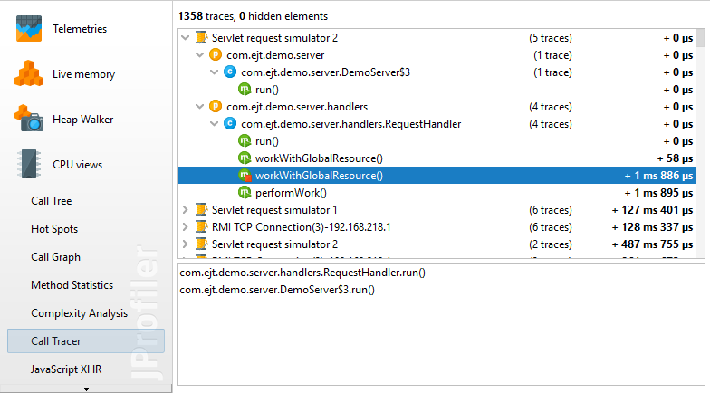
Another view that analyzes method calls is the "Method statistics" view. It introduces another axis of measurement and records a histogram of execution times for each method. Unless you are interested in investigating if there are outliers in the execution times of certain methods, you don't need this data and its recording would create unacceptable overhead. So there is a separate recording for method statistics that you have to switch on in the associated view.
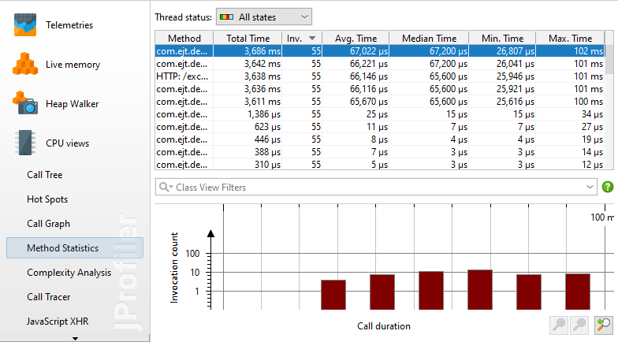
Both call tracer and method statistics depend on CPU recording and automatically switch it on if necessary.
Another specialized view that has its own recording is the "Complexity analysis". It only measures the execution times of selected methods and does not require CPU recording to be enabled. Its additional data axis is a numeric value for the algorithmic complexity of a method call that you can calculate with a script. In this way, you can measure how the execution time of a method depends on its parameters.
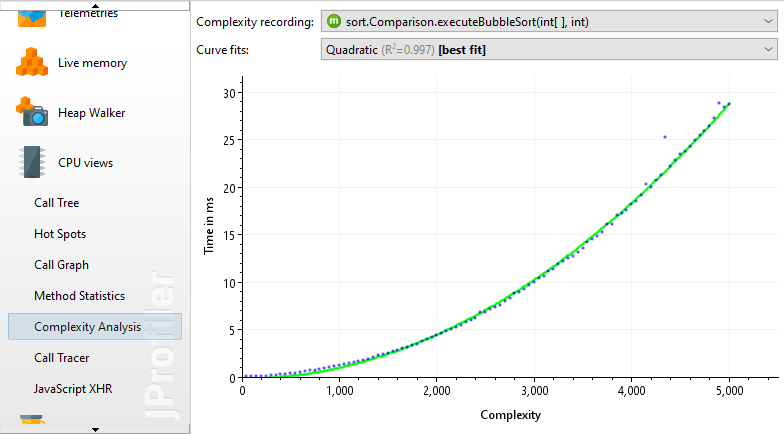
To analyze why threads are waiting or blocking, the corresponding events have to be recorded. The rate of such events varies greatly. For a multi-threaded program where threads frequently coordinate tasks or share common resources, there can be an enormous amount of such events. This is why such chronological data is not recorded by default.
When you switch on monitor recording, the "Locking history graph" and the "Monitor history" view will start to show data.
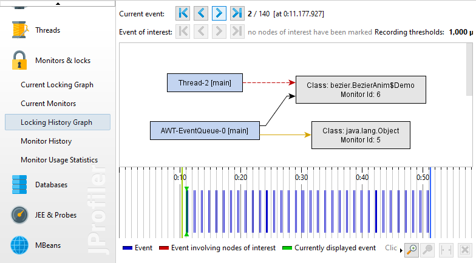
To eliminate noise and reduce memory consumption, very short events are not recorded. The view settings give you the possibility to adjust these thresholds.
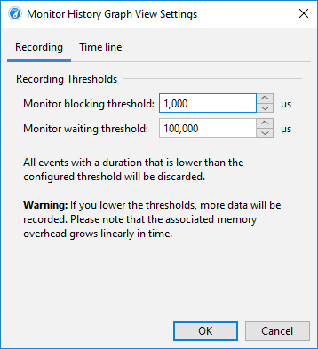
Probes show higher-level subsystems in the JVM, such as JDBC calls or file operations. By default, no probes are recorded and you can toggle recording separately for each probe. Some probes will add very little or no overhead and some will create a considerable amount of data, depending on what your application is doing and how the probes are configured.
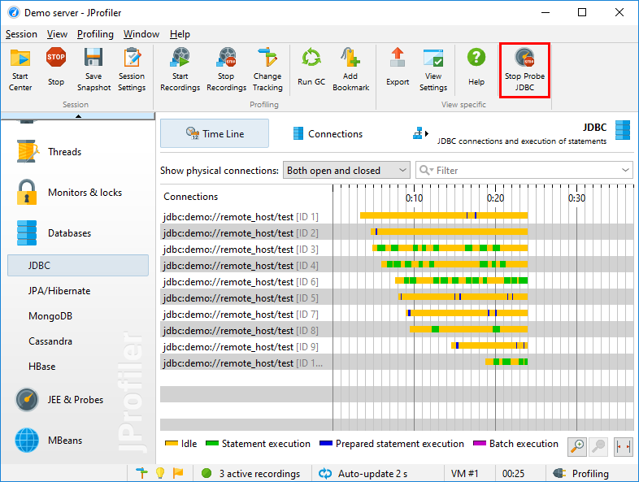
Just like allocation recording and method call recording, probe data is cumulated and chronological information is discarded except for time lines and telemetries. However, most probes also have an "Events" view that allows you to inspect the single events. This adds a potentially large overhead and has a separate recording action. The status of that the recording action is persistent, so that when you toggle probe recording, the associated event recording is toggled as well if you have switched it on previously.
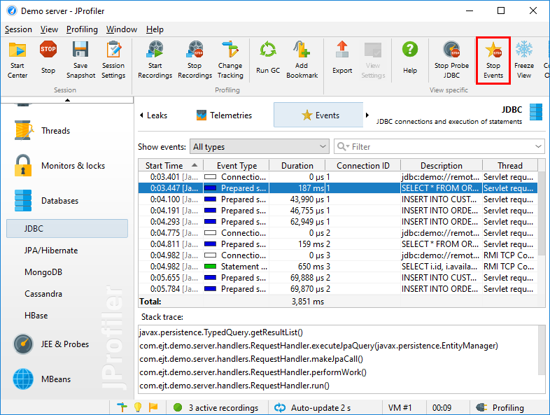
The JDBC probe has a third recording action for recording JDBC connection leaks. The associated overhead with looking for connection leaks is only incurred if you are actually trying to investigate such a problem. Just like the event recording action, the selection state of the leak recording action is persistent.
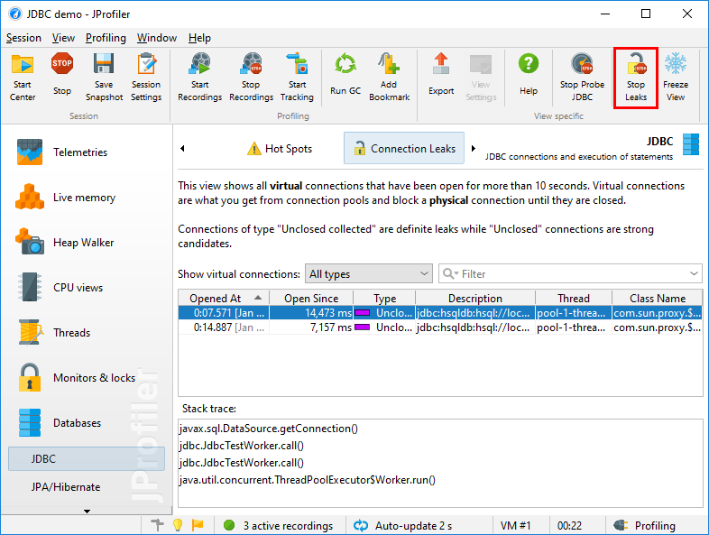
In many situations, you want to start or stop various recordings together with a single click. It would be impractical to visit all the corresponding views and toggle the recording buttons one by one. This is why JProfiler has recording profiles. Recording profiles can be created by clicking on the Start Recordings button in the tool bar.
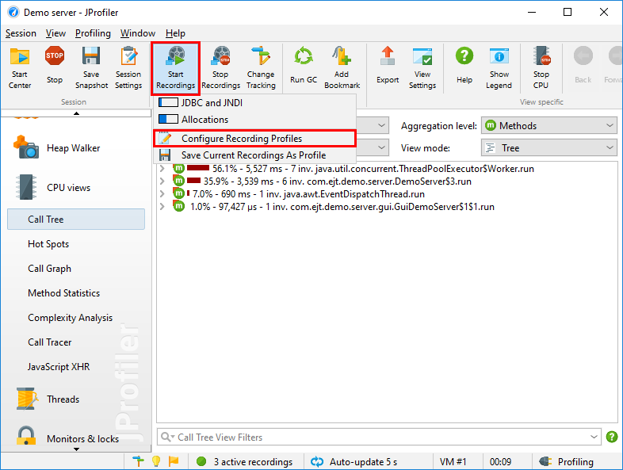
Recording profiles define one particular combination of recordings that can be activated atomically. JProfiler tries to give you a rough impression on the overhead that you create by the selected recordings and tries to discourage problematic combinations. In particular, allocation recording and CPU recording do not go well together because the timings of CPU data will be distorted significantly by allocation recording.
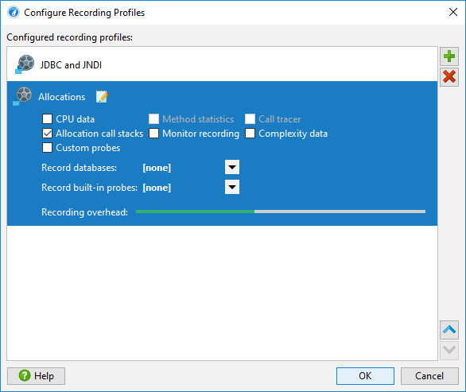
You can activate recording profiles at any time while a session is running. Recording profiles are not additive, they stop all recordings that are not included in the recording profile. With the Stop Recordings button you stop all recordings no matter how they have been activated. To check what recordings are currently active, hover the mouse over the recordings label in the status bar.
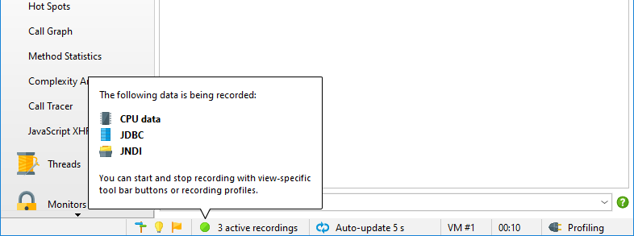
A recording profile can also be activated directly when you start profiling. The "Session startup" dialog has an Initial recording profile drop-down. By default, no recording profile is selected, but if you need data from the startup phase of the JVM, this is the place to configure the required recordings.
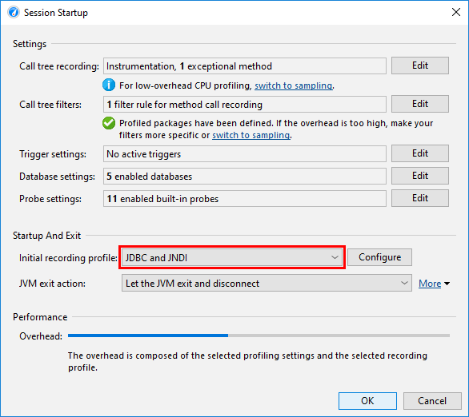
Sometimes you want to start a recording when a particular condition occurs. JProfiler has a system for defining triggers that execute a list of actions. The available trigger actions also include changes to the active recordings.
For example, you could want to start a recording only when a particular method is executed. In that case, you would go to the session settings dialog, activate the Trigger Settings tab and define a method trigger for that method. For the action configuration, you have a number of different recording actions available.
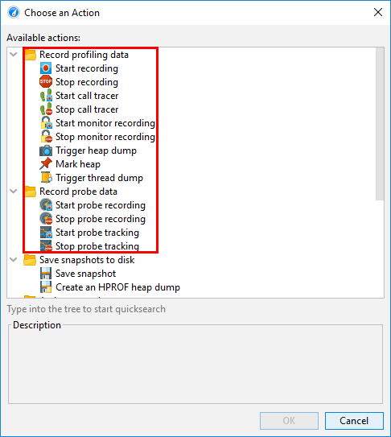
The "Start recording" action controls those recordings without any parameters. Usually, when you stop and re-start a recording, all previously recorded data is cleared. For the "CPU data" and "Allocation data" recordings, you also have the option to keep the previous data and continue cumulating across multiple intervals.
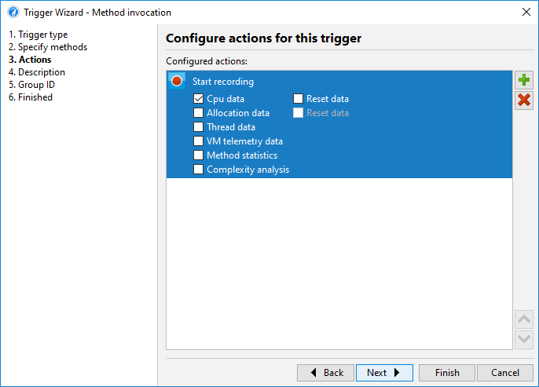
Method triggers can be added conveniently in the call tree by using the "Add method trigger" action in the context menu. If you already have a method trigger in the same session, you can choose to add a method interception to an existing trigger.
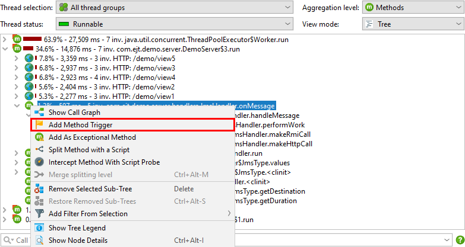
By default, triggers are active when the JVM is started for profiling. There are two ways to disable triggers at startup: You can disable them individually in the trigger configuration or deselect the Enable triggers on startup check box in the session startup dialog. During a live session, you can enable or disable all triggers by choosing Profiling->(Enable|Disable) Triggers from the menu or clicking on the trigger recording state icon in the status bar.
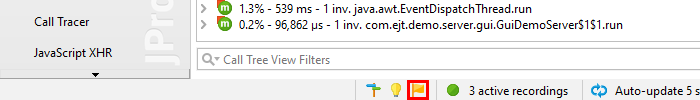
Sometimes, you need to toggle trigger activation for groups of triggers at the same time. This is possible by assigning the same group ID to the triggers of interest and invoking Profiling->Enable Triggers Groups from the menu.
JProfiler has a command line executable for controlling the recordings in any JVM that is already being profiled. jpcontroller requires that the JProfiler MBean is published, otherwise it will not be able to connect to the profiled JVM. This is only the case if the profiling agent has already received profiling settings. Without profiling settings, the agent would not know what to record exactly.
One of the following conditions has to apply:
-agentpath VM parameter that included both the
nowait and the config parameters. In the integration wizards,
this corresponds to the Startup immediately mode and the Apply configuration at startup option
in the Config synchronization step.
jpenable executable and the
-offline parameter was specified. See the output of jpenable -help
for more information.
Specifically, jpcontroller will not work if the profiled JVM was started only with the
nowait flag. In the integration wizards, the Apply configuration when connecting with the
JProfiler GUI option on the Config synchronization step would configure such a parameter.
jpcontroller presents you with a looping multi-level menu for all recordings and their parameters. You can also save snapshots with it.
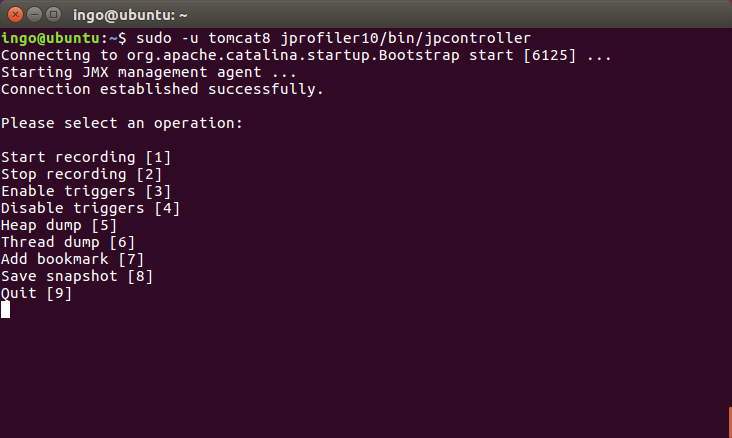
Yet another way to start recording is through the API. In the profiled VM, you can call the
com.jprofiler.api.controller.Controller class to start and stop recordings programmatically.
See the chapter on offline profiling for more information and for how to get
the artifact that includes the controller class.
If you want to control recordings in a different JVM, you can access the same MBean in the profiled JVM that is
also used by jpcontroller. Setting up programmatic usage of the MBean is somewhat
involved and requires quite a bit of ceremony, so JProfiler ships with an example that you can reuse. Check the file
api/samples/mbean/src/MBeanProgrammaticAccessExample.java. It records CPU data for 5 seconds
in another profiled JVM and saves a snapshot to disk.